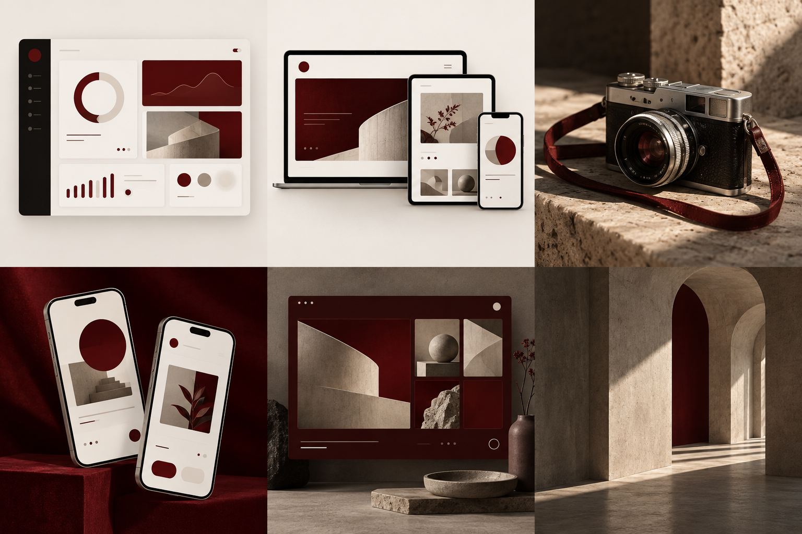

thoughtful interfaces that balance clarity, usability, and your brand’s character.

hello world! i’m Naufal Rafi, i work as freelancer, particularly in UI design, website development, and photography. i do your needs aesthetically to made an impactful art for your business
see my artworkexpertise &
services
to make your needs
an impactful art
responsive websites for your company, portfolio, or organization.
portraits, products, and moments captured with an eye for light, detail, and your story.
recent
projects
Showing all 6 projects.

tools that i
use
my tools to create
something different,
and aesthetic
- python
- figma
- adobe illustrator
- adobe photoshop
- acode
- visual studio code
-
– now
shutterstock contributor freelance graphic designer
-
designer at Ilaikum Magazine web developer at Ilaikum Magazine photographer at Ibnu Abbas Student Council
-
– now
multimedia staff of media & IT department at Ibnu Abbas Boarding School freelance web developer
work experience
let’s work together!
Project previews rotate from left to right. Hold and drag to explore; release to resume. Use the arrow keys to explore, or Space to pause and resume.
view recent projectsstart your business here!